I'm a young creative from Anaheim, California currently working as a UI/UX Designer at PlayFull as well as pursuing a B.F.A. in Design at the University of Southern California. I take inspiration from everyday life and incorporate it into my designs.
I'm a visual storyteller, a crafter of interfaces and someone who brings imagination to life, a future unicorn, a learner, a dreamer - and me. When I'm not designing, I'm traveling, taking photos of everything I find beautiful, and spending time with the ones I love.

Playfull is a mobile app that allows users to play games, earn points, and use to points to get free food at their partner restaurants including Chick-Fil-A, Subway, Denny’s, and more. Simultaneously, PlayFull helps restaurants retain customers through games.
Design an order ahead feature for the PlayFull app
PlayFull has two users; the ones looking for discounted food at restaurants, and restaurants looking for more customers. The biggest complaints from users was that there not enough restaurants on the app. Playfull’s partnered restaurants are limited to UCLA, preventing users from being able to redeem their rewards outside of the UCLA area. The process of adding additional restaurants to the app was a lengthy process. The company would spends months trying to establish a relationship with each restaurant for the chance that they would agree to partner with Playfull, and usually that partnership would not form. The limited partnered restaurants that were on the app and the rate each partnership formed, was not enough to satisfy users nor satisfy the company’s goal of efficiently expanding outside of UCLA.
The biggest issue with restaurants was that they had difficulty using the PlayPad, which is a customer-facing tablet next to the restaurants POS that ensures secured transactions. It required employees to be trained to learn how to use it and it would frequently power off without restaurants knowing how to turn it on, requiring repeated maintenance.
LevelUp, an order ahead service that expressed interest in integrating their API into the PlayFull app, allowing users order food from their phone instead of in person, which theoretically should cause an increase in revenue for restaurants. In addition, Playfull would receive access to LevelUp’s restaurant network, giving users a greater selection of stores to order from. In order for the partnership to be a success, PlayFull would need to design an order ahead feature within the app.
Sketch
I started off by researching popular order ahead apps. I drew out the app screens that I thought were successful on the right and wrote down a list of features for each app that I thought were successful on the left.

Caviar
Users profile and delivery address are easily accessible
Features discounts, popular meals, and recommend food to give users an idea of what's available to them and easier to make food selections
Shows estimated delivery time
List full ingredients for each menu item
List pictures for each menu item
Tapingo
Can easily switch from pickup to delivery
Can see how many people are ahead of you in the “digital line”
Must use fingerprint or code to complete order
Can easily edit order at checkout

Uber Eats
Restaurant page is nicely organized the top sliding navigation bar
Lists restaurant hours
Lists warnings if a menu item is spicy, vegan, etc.
Users can write special instructions for their order
Shows users a timeline of when their order is placed, prepared, and out for delivery
Doordash
Can easily switch from pickup to delivery
Can see how many people are ahead of you in the “digital line”
Must use fingerprint or code to complete order
Can easily edit order at checkout
From there I wrote a list of features I thought would be important to include in Playfull’s order ahead feature that would make it a positive experience for users.

I started to sketch out some ideas for designing the order ahead feature based off my research.


Once I had a general sense of what I wanted the order ahead feature to look like, I created a set of lo-fi sketches and detailed information about how each screen would function.
Lo-fi sketches link
I went to UCLA's campus and asked students for the opinion on the app.
Here are some of the questions I asked:
Let’s imagine you’ve just opened up the app. What do you think you can do from this screen?
How well did the order ahead feature meet your needs?
Imaging that you were free to roam, how likely would you be to explore different sections of the app? Why?
If you could change 1 thing about this feature, what would those be?
I made a user testing summary report to outline the main responses I received from users. I learned that overall, users enjoyed the ordering experience, but they prefered if the open and close icons were removed. As a result, I came up with the idea to have open restuarants featured at the top of the page, while closed restuarants were at the bottom of the page and grayed out to indicate that it wasn't open.
I concluded that next and momentarily final iteration of the feature would satisfy the users needs to placing an order. Here's the final prototype:

Good&Co is a matchmaker-meets-career-guidance-counselor app that connects people, companies, and workplaces. Good&Co uses personality tests to match job hunters with companies that best fit their characteristics and strengths.
I applied to Good&Co and was assigned a design challenge to be considered for their UI/UX internship position.
Design challenge prompt: Redesign our karma point system and quiz screen. The current issues are; the users cannot go back on the quiz screen, the users has a hard time to figure out "tap to confirm answer". For the Karma point system, explore the app to find the flaws and report your findings/ proposal.
One week
For this design challenge, I used Sketch to recreate the Good&Co. app layout from scratch and used Principle for the animation.
Improve application usability and intuitiveness, specifically relating to how Karma Points are gained and their purpose.
Decrease user frustration with app controls.
Improve user satisfaction and retention (i.e. coming back to the app for more).
To gather user feedback to identify pain points in the application, I asked a few of my friends to download the application and answer two short questions about their experience (with emphasis on quizzes & Karma Points).
Were you confused with how the scale worked or had any difficulties with using it? If so, please explain.
What are Karma Points and what are they used for?
Pain points I had pre-identified by going through the application so far were:
Users can’t go back to previously answered questions.
The “tap to confirm” user action is confusing.
From my user research, the main concerns users seemed to have about quizzes were:
Difficulty understanding the meaning of their scale position
There was nothing to tell them if their choice meant that they slightly agreed, extremely agreed, or felt neutral about the two choices they had.
No contextual clues provided by scale color
The colors blue and purple weren’t significant colors that expressed that they slightly agreed, extremely agreed, or felt mutual about the two choices they had. A few suggested having a scale colors that went from red (slightly agree) to green (extremely agree).
Unable to answer to answer previous questions
Most of the users were expecting to see a “previous” and “continue” buttons to maneuver through the questions. Since those buttons weren’t there, their first instinct was to click the colored rectangle that held the previously answered question thinking that would allow them to reanswer the question.
Pain points I had pre-identified by going through the application so far were:
Users were mostly unaware of accumulating karma points.
Users did not receive any feedback from the app that told them that they received karma points for sharing the app or strength card.
Good&Co. uses Karma Points to make users excited and want to take more quizzes, but users aren’t aware that they received Karma Points. When all the Karma Points alerts are hidden within the bell notification, users may not feel like their actions weren’t enough for a “congratulations” and stop using the app.
From my user research, the main concerns users seemed to have about karma points were:
They were unable to feel excited/value by gaining Karma Points.
Gamification is powerful when the user feel accomplished.
Facebook users feel accomplished about their good-looking selfie when they get likes.
Pokemon Go users feel accomplished feel accomplished when they find a rare pokemon.
When the user feels good, they come back for more. What these apps have in common is randomness. The Facebook user gets excited for the amount of likes they might possibly get, and Pokemon Go user gets excited for what a Poke Stop might have for them.
Problem: Users were confused about how scale values worked (e.g. what does it mean to shift the scale value slightly right or left?).
Solution: Modify the scale to have discrete “checkpoints” for each choice.
The checkpoints on the scale help make users aware that their choice means slightly agree, extremely agree, or felt neutral about the two choices they have.
With distinct options, it’s easier for users to understand that once they move the slider button to the checkpoint that best fits them, they can tap to confirm to answer the next question.
Visual of the discrete scale solution
Problem: Users would like a way to change or view answers they provided to previous questions.
Solutions:
The first solution is allowing users to tap the colored rectangle at the top of the screen that contains the previous question. When the user taps the previous question, the previous question will then slide back into the frame in the current question section for the user to answer. Here’s a visual below.
Visual of tap text to go back solution
The next (more intuitive) solution that I have is create a carousel slider. Apps like Tinder and Spotify use these sliders to let users know that there is more to explore. Having a carousel slider for Good&Co. shows users that that their previous and future questions haven’t disappeared, they’re just off to the side and can be easily accessible by scrolling either left or right.
Visual of the carousel solution
Problem: Users weren’t aware when they received Karma Points from certain actions.
Solution: My solution for Karma Points is having a modal pop-up thanking users for completing a task that allows them to earn Karma Points. This makes it clear to users that certain desired actions (like liking Good&Co.’s Facebook page) lead to positive in-app outcomes (getting Karma Points).
Visual of Karma Points pop-up
Problem: Users didn’t feel excitement from gaining Karma Points.
Solution: To improve the gamification, users can receive “hidden” quizzes at random intervals of Karma Point gain.
For example, once the user completes 4 quizzes or shared the app with 5 friends and liked the Good&Co. Facebook page, users will be alerted that they earned a Karma Point free quiz for sharing the app with friends.
By making this random, it increases user engagement with the application and drive to continue staying on it (since a ‘random’ event can happen at any time).
This makes users more excited to share the app with friends and gains Good&Co. more users.

One of my favorite restaurants is The Burger Spot. It's a diner famous for their burgers but I will always know them for their amazing wings. As much as I enjoy eating at the restaurant, their current logo is something I can't ignore- and not for good reasons.

Their current logo doesn't properly express the restaurant's culture. The feelings I get from being inside the restaurant is a retro/vintage and family-friendly diner. However, their current logo is a thick sans serif font that isn't expressive. Without their imagery, I couldn't figure out what their typeface is trying to express to the people who pass by it.
My first step when designing the logo was to figure how to convey the personality of the restaurant into the logo. The words I thought best described The Burger Spot was vintage, family-friendly, retro, and fun.
My next step was then to start sketching.


I ended up liking this sketch the most so I scanned my sketch and placed into into Illustrator.

After spending a couple of hours on refining the details, I ended up feeling pleased with the final result.
What I love about the new logo is how I was able to convey the diners personality. All of the letters are round which express make viewers automatically think of fun. And the thick bubble letters look like vintage/retro letters that I studied for inspiration. The highlights I added were to reiterate the fun and bubbly feeling I was trying to express and it also looks like the font was written by squirting paint out of a bottle which goes along with their ketchup splat on their original logo. The reason why I chose red, white and black for the logo colors is because those colors are common colors that are found in diners.
For my typography assignment, I had to create a monogram. What I started off doing is thinking of what I wanted people to think when they viewed the logo since monograms are a representation of the person who designed it. What I wanted people to know by looking at the logo is that I am highly interested in modern/futuristic designs and I am also always evolving and changing my design styles not only for experimentation but also to be able to change my design style to best suit the need of a client.
I started off drawing different ways of drawing my initials, S and J together.
I decided on 4 sketches that I really liked and go into more detail with them.

I like the second monogram to the left the best and so I continued to refine it until I ended up with the final result.

What I like about this logo is that that it when I look at it or show it to others, the first word that comes to describe the monogram is "modern". The reason I chose to use gradients is because they are a popular design trend at the moment and I used them to express my fluid and evolving design style.
According to https://advertising.expedia.com/audience/, 58% of the users of Expedia are between the ages of 25 - 54.
Interests: Entertainment, Dining out, Adventure, Outdoors, etc.
Adults ages from 25 - 54 are busy with starting/raising a family, working, going to events - overall balancing work at time. Have little time to spend hours planning on finding a destination, dates that fits best with their schedule and budget.
An agent to help users find and book a trip
For planning trips and vacations, users can speak with an Expedia Bot. Selecting travel plans will be like interacting with a smart travel agent. The Expedia Bot will make smart decisions based on their proposed location, budget, time of year they want to go, etc. The user gives verbal responses like they would with Apple’s Siri and Amazon’s Alexa. The Expedia Bot will take the information that the user gives to recommend flights, hotels, and complete travel packages.
Users can upload/sync their calendar for the AI to parse the info to determine which dates would be the best for the user. Additionally, users can input their airport departure, total budget for flight, hotel, and car rental, and desired location.
If users are unsure of where they would like to travel, users will be given a questionnaire about their prefered weather conditions/environment and personal interests, to choose from. The AI will take the selected data into consideration and recommend the locations that complement the user’s desired choices and times available.
Users can choose from a selection of hotels, flights, and complete travel plans that companies want to sell within 3 weeks. Since the selections need to be sold at the last minute, they have the highest discount to appeal to users.
Example: Contiki
User finds a travel option they like and select “Book Now”. They are taken to the shopping cart to review their selection. If the user is satisfied, then select “Confirm” and provide their payment information. Once the user confirms the travel plan, they cannot receive a refund.
Once the user has confirmed their travel plans, the Expedia Bot will sync information such as upcoming flights, hotel details, and car rental information into their preferred calendar. Users will additionally receive notifications reminding them about their upcoming flight and travel plans.
Personal
Gender: Female
Age: 34
Occupation: Senior marketing director
Family status: Married with 2 children in elementary school and involved with her children’s extracurricular activities
Needs
Brooke is busy because of her full time job and taking care of two young children. Her budget is stretched due to her expenses. Therefore, she needs to spend less time planning trips she can afford.
How Proposed Solutions Help Brooke
Calendar Upload/Sync
Brooke is able to save time by uploading her calendar which includes her daily schedule. The AI can parse the information within the calendar to determine which dates to recommend.
Expedia Bot
Brooke is able to use the Expedia Bot as an interactive travel agent. Expedia Bot asks questions about her total budget, desired location and additional needs/concerns. Expedia Bot uses the uploaded calendar and answers from the interactive questionnaire recommend complete travel plans that fit her needs.
Pros:
Save users time from reviewing their calendars to determine what time is good for them.
Expedia Bot is able to process the given information and provide recommendations within seconds.
Users no longer need to manually input information, only interaction needed is communicating with Expedia Bot.
Cons:
Users may prefer to manually input information.
Users are unsatisfied with the recommendations given to them.
Users may not have digital calendar to upload.
AI cannot properly parse the uploaded calendar.
Expedia Bot may not sync travel plans into calendar.
Personal
Gender:Male
Age: 27
Occupation:Student enrolled in PhD program in Psychology
Family status: Has a girlfriend; no children
Needs
Matthew cannot find a vacation spot because he is indecisive since him and his girlfriend can’t decide where to travel. Therefore, they need need an efficient way to select a travel destination.
As a PhD student also, Matthew’s budget is thin.
How Proposed Solutions Help Matthew
One Touch Booking
Matthew can use the “One Touch Booking”/”Quick Booking” section (can’t decide on name title) allowing him to select select and confirm a hotel, flight, or entire travel plan in one touch.
Travel List
Another feature of the Expedia Bot is providing a preference list to uses. Expedia Bot asks questions about their preferred weather conditions, events, and social activities and curates the perfect destination based on their interests.
Pros:
Rapid travel package purchases.
Users save time and hassle on making destination decisions.
Users are exposed to new and interesting destinations they may not have originally thought of traveling to.
Get a large discount.
Cons:
Users may not fully think through their quick booking plan and regret their purchase.
Users are unsatisfied with the recommendations given to them.
Users may not be able to travel during the given dates.
User enters homepage.
User selects the “Flights” tab.
User selects “Speak with Expedia Bot”.
Expedia Bot window opens.
Expedia Bot asks the user for their budget for the flight and prompt user to enter “Skip” or select the “Skip” button if they do not wish to answer the question.
User enters their budget for the flight, enter/select “Skip”, or select microphone icon to tell Expedia Bot their total budget for the flight by voice.
Expedia Bot asks user their prefered travel destination and gives tells users that they can select the “Show Interest List” button if they would like to help with finding locations that may interest them.
User enters prefered travel destination, selects “Show Interest List” or selects microphone icon to tell Expedia Bot their preferred travel destination by voice.
If user selects “Show Interest List”, Expedia Bot will ask the user about their prefered weather conditions.
User selects from options available and selects “Continue”.
Expedia Bot will ask the user their preferred social activities and events.
User selects from options available and selects “Continue”.
Expedia Bot will show the user 6 different locations that match their interests to choose from. Each location will also include a brief description about the location.
User enters the name of the location they are interested in or can select the microphone icon to tell the Expedia Bot by voice.
Expedia Bot asks user for their available dates with the option to select the “Sync Google Calendar” for Expedia Bot to determine which dates are best for the user.
If the user selects the “Sync Google Calendar” button, the user will be brought to the Google Calendar app.
Google Calendar app asks user to confirm that user wants Expedia to use the data from the app.
User selects to confirm sync.
Expedia Bot parses information to determine what dates that the user is available.
Expedia Bot asks user their preferred departure/return airport location.
User enters their prefered departure/return airport locations or selects the microphone icon to tell Expedia Bot their prefered departure/return airport location by voice.
Expedia Bot asks the user for the amount of flight passengers.
User enters the amount of flight passengers or selects the microphone icon to tell Expedia Bot the amount of flight passengers by voice.
Expedia Bot asks the user if they are interested in booking a hotel with a “Yes” and “No” button for the user to select.
User selects the “Yes” or “No” button, enters “Yes” or “No”, or selects the microphone icon to tell Expedia “Yes” or “No” by voice.
The user enters their total budget for the hotel or selects the microphone icon to tell Expedia Bot by voice.
The user enters their total budget for the hotel or selects the microphone icon to tell Expedia Bot by voice.
Expedia Bot ask the user how many days and nights the user plans on staying at the hotel.
The user enters the amount of days and nights they are planning on staying at the hotel or selects the microphone icon to tell Expedia Bot by voice.
If the User Selects “No”, Expedia Bot will skip asking the user additional hotel questions.
Expedia Bot asks the user if they are interested in renting a car for their trip witha “Yes” and “No” button for the user to select.
If the User selects “Yes”, Expedia Bot will ask the user for their budget for the car rental.
The user enters their total budget for the car rental or selects the microphone icon to tell Expedia Bot by voice.
Expedia Bot ask the user how many days the user plans on using the rental car.
The user enters the amount of days and nights they are planning on using the rental car or selects the microphone icon to tell Expedia Bot by voice.
If the User selects “No”, Expedia Bot will skip asking the user additional car rental questions.
Expedia Bot shows the user their responses and ask the user if they wish to make a change to their travel detail responses before the confirm their responses. The question includes a “Yes” and “No” button for the user to select.
If the User selects “Yes”, Expedia Bot will ask the user to select from the list of travel fields they had previously answered.
The Expedia Bot will ask the user to enter the new information.
If the user selects “No”, Expedia Bot will take the user to the “Recommended Travel Plans” window.
User browses through “Recommended Travel Deals” window and selects the option they want by selecting the “Reserve” button.
User is brought to the checkout page.
User reviews selected travel deal.
User inputs payment information.
User selects “Confirm” to purchase.
User enters homepage.
User selects the “Flights” tab.
User selects “One Touch Booking” tab.
User browses through flight, hotel, and travel packages.
User selects “Book Now” to select desired travel option.
User is brought to the checkout page.
User reads and agrees to the terms and conditions.
User inputs payment informations.
User select “Confirm” to purchase.
User confirms travel purchase.
Expedia Bot automatically syncs flight details - departure/return date, airport location, and hotel and car rental information into user's calendar.
Expedia Bot sends the user confirmation email about travel plans.
Expedia Bot sends the user push notification to check in for flight 24 hours beforeflight departure.

This motion graphic was made with the help of watching a tutorial on using Adobe After Effects on Skillshare.

Cookie Animation
Designed and animated this excited fellow using Sketch and Principle.

Title: Sleepless Night
This illustration was inspired by one of my favorite YouTube channels, Kurzgesagt – In a Nutshell.

I created this icon set because of my love for sweets. My sweet tooth was my inspiration for these colorful treats.


I created this icon set because of my love for sweets. My sweet tooth was my inspiration for these colorful treats.
My Slack redesign was done for the KPCB Fellows Program. The Fellows Program is a work-based program that pairs top U.S. Engineering, Design & Entrepreneurial students with innovative startup companies.
Redesign a feature of of a KPCB company’s product. You are free to focus on any disciplinary area that you are strongest with: Visual Design, Interaction Design, User Experience, and/or User Interface Design.
The KPBC company I chose to redesign is Slack. Slack is an instant messaging and collaboration site that provides real-time messaging, archiving and search for modern teams.
To gather user feedback to identify pain points in the application, I asked a few of my friends who used Slack daily to answer three questions about their experience.
Do you have or had any difficulties with using Slack? If so, please explain.
What is your favorite and least favorite feature on Slack?
If you could add/change one thing about how Slack works, what would it be?
The most prominent response I received from my friends was that they had difficulty keeping track of conversations. For instance, many of my friends are part of channels with more than 20 members. The large amount can easily become problematic. For example, when a group of members is discussing the channel topic with each other, and then another member breaks into the main discussion by bringing up another topic, it becomes difficult to tell what the main subject matter is.
The only solution to that problem has been creating another channel to move that sub-topic. But that creates a lot list of unwanted inactive channels on a user's feed to scroll through, making it difficult for a user to find their desired channel.
Problem needed to solve: How can I refine the existing Slack UI to better allow users to introduce different topics into a channel without disrupting the main channel topic?
Improve application usability specifically relating to how the channel messages work.
Decrease user frustration with changing topics within a channel.
The solution I had for this issue is creating “temporary channels”. The way temporary channels works is that a member can create a sub-channel within the main channel. This allows members to be redirected into discussing a topic related to the main channel topic, without disrupting the other members in the main channel. What makes this solution better than creating another channel is that the temporary channel is only, temporary.
The channel will last up to 24 hours after the last message has been posted in the channel. This prevents users from having to scroll through a long list of inactive channels. If a user is interested in keeping the sub-channel around, they are more than welcome to use the archive slash commands which is a feature already built into Slack.
Before I started any high fidelity mockups, I created a user flow to make sense of how my proposed “temporary channels” idea would work, and drew out my design ideas.
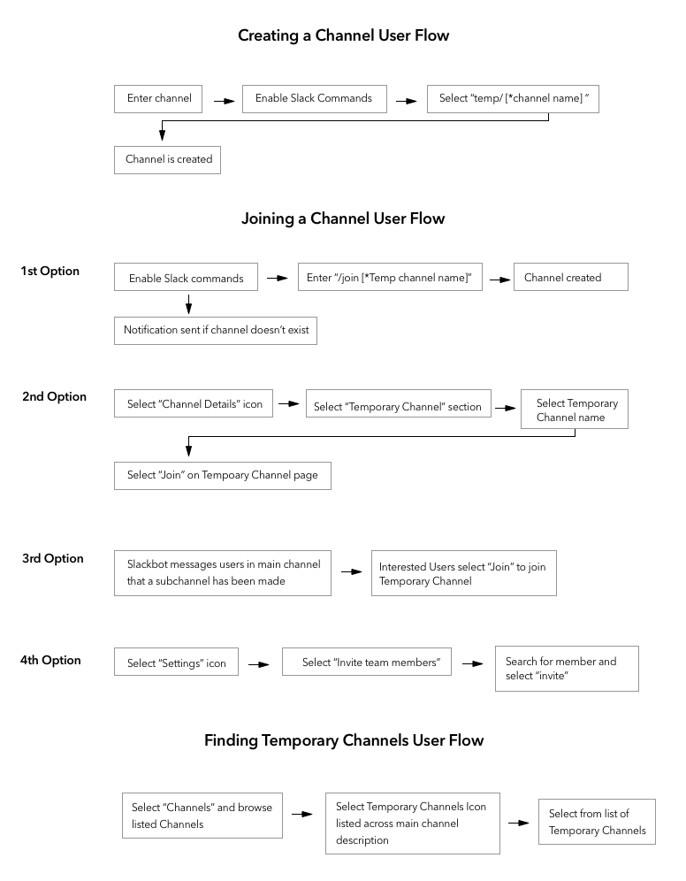 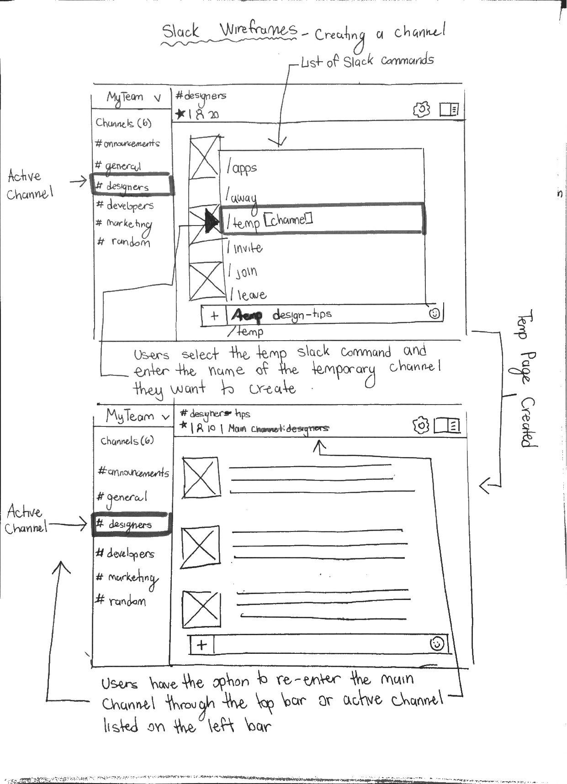 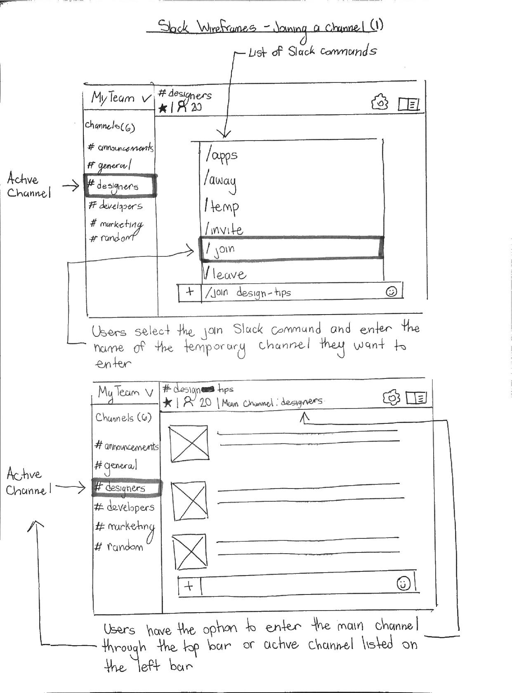 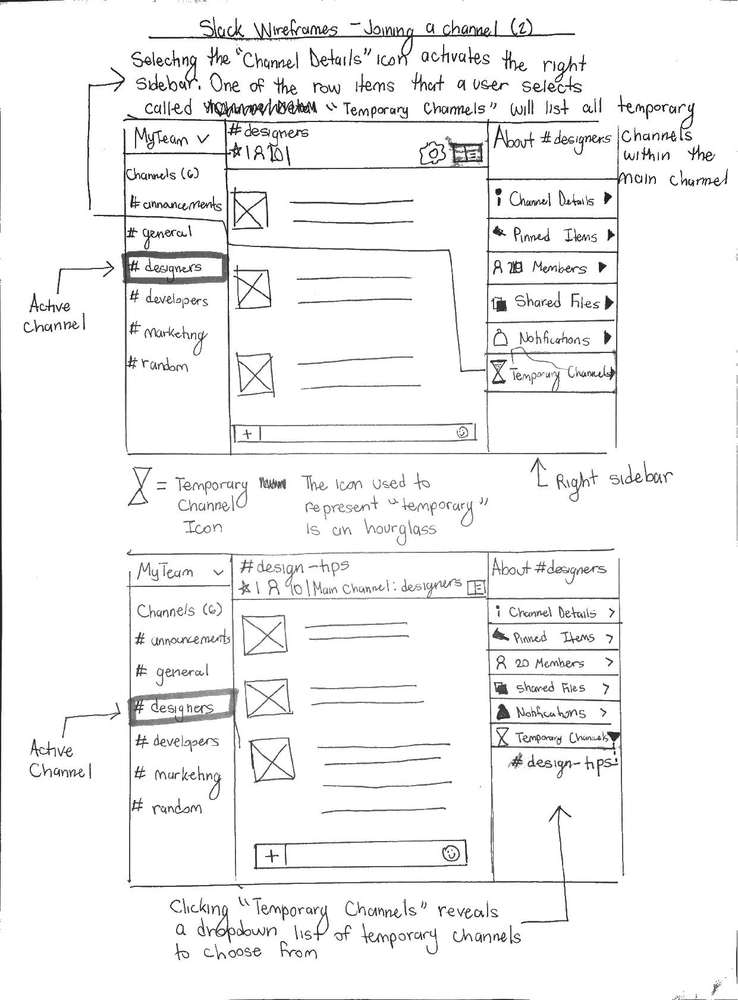 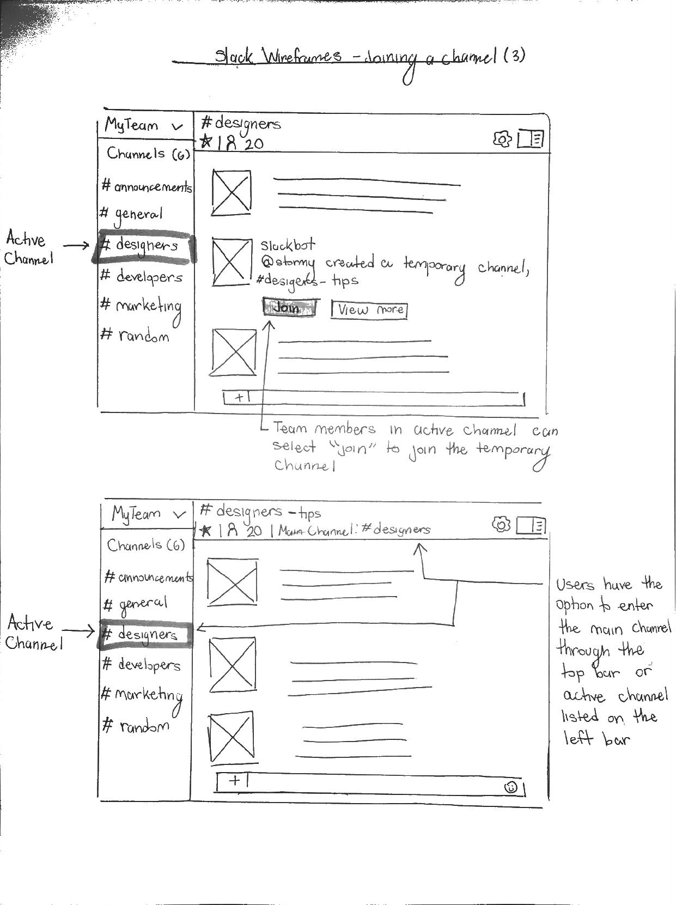 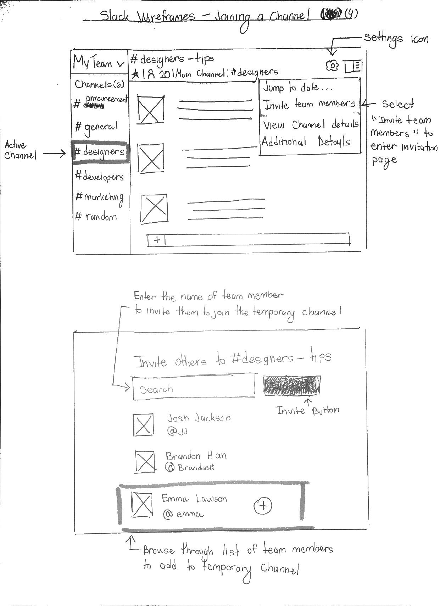 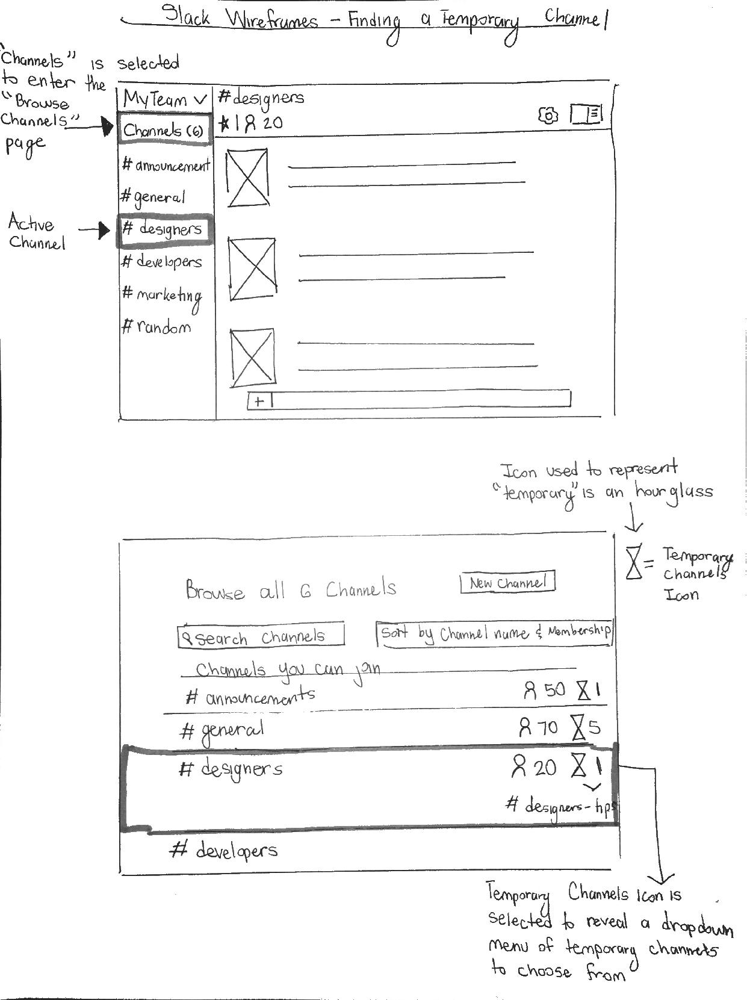 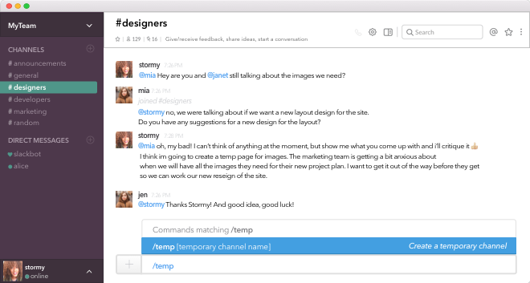Enabling Slack slash commands to create a temporary channel.
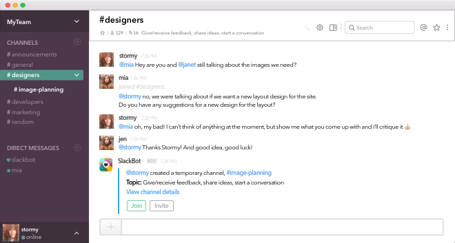Once a temporary channel has been created, members will be alerted by SlackBot that a temporary channel has been created. Members of the channel can join the temporary channel and invite other members to join. Once a temporary channel has been created, it is listed in the left sidebar underneath the active channel. Users can expand/close the list of temporary channels by selecting the downward chevron.
This is the temporary channel page view. Blue is used as a temporary channel color to help users differentiate between a temporary channel and main channel. When a user is on a temporary channel, they can return to the main channel by selecting the black, bolded main channel listed underneath the temporary channel. Users can also select the temporary channel listed in the left sidebar underneath the active channel as mentioned previously.
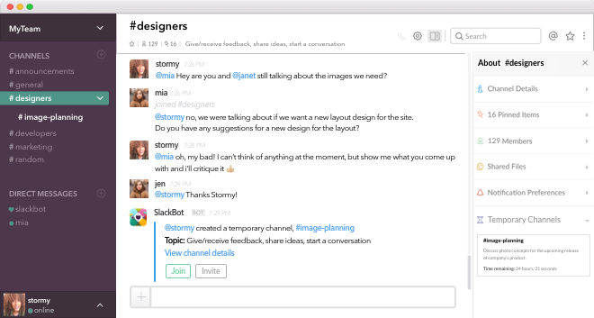Another way of joining a channel is by selecting the “Channel Details” icon listen on the left side of the search bar. When “Temporary Channels” is selected, a dropdown of all the temporary channels will be listed containing the topic detail and the time remaining. Once the temporary channel name is selected, the user will be brought to the temporary channel page.
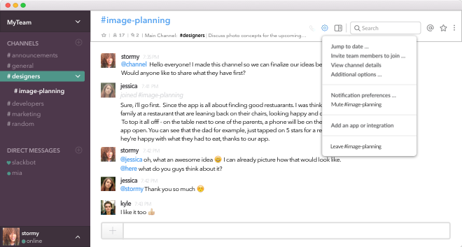Members of a temporary channel can invite other members by selecting the “Settings” icon, and selecting “Invite team members to join...”.
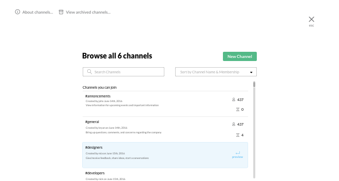Members can find temporary channels by interesting the browse channels page. Members can scroll through the list of channels and view how many members are in the channel along with a number of temporary channels. If users are interested in viewing the name of the name of temporary channels, they can hover over a desired channel and select preview. That action will allow the member to preview a channel page. They can then select the “Channel Details” icon to view more information regarding the temporary channels.